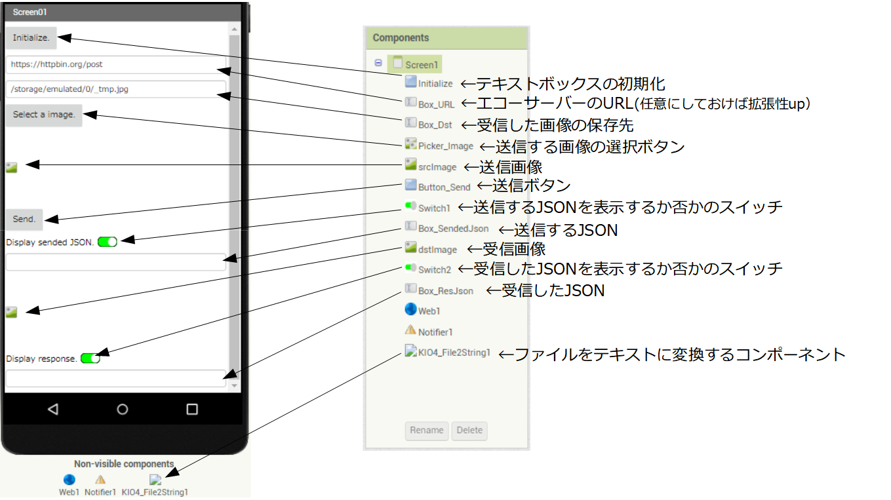

前回、テキストの送受信をApp Inventor2（以降AI2）で行いました。
今回は、画像でそれを行いたいと思います。
ポイントは、画像（バイナリーデータ）をテキスト（文字列）データに変換してから送信し、受信したデータを再び画像に変換する処理を追加する点です。
前回と同様に、作成したプロジェクトはこちらに置いておきます。本ページではポイントを説明します。
拡張機能（Extension）の導入
こちらに に「KIO4_File2String」というAI2の拡張機能が公開されています。ファイルをbase64の文字列に変換し、base64の文字列をファイルに変換する機能です。
作者は「Juan Antonio」さんです。ライセンスはMITです。機能とライセンスともに、非常に使い勝手の良い拡張機能です。
com.KIO4_File2String.aix をダウンロードしてください。
画像1
パレットの一番下Extension → Import extension でダウンロードしたcom.KIO4_File2String.aixを選択します。
画像2
画像3
画像3のように拡張機能が追加されます。あとはドラッグ＆ドロップで機能をアプリケーションに追加することができます。
画像4
call KIO4_File2String.File2Stringは、pathFileで指定したファイルから、文字列の作成を実行します。
call KIO4_File2String.String2Fileは、stringに文字列を指定すると、文字列からファイルを作成し、pathSaveで指定したファイルに保存します。
when KIO4_File2String.GetStringは、call KIO4_File2String.File2Stringによる文字列作成が完了した後に、実行したい処理を設定します。
デザイナーでの作業
デザイナーで以下のように、コンポーネントを配置していきます。

画像5
強いてポイントをあげるなら、画像ファイルから変換したテキストの表示に時間がかかるので、スイッチを使って表示ＯＮ／ＯＦＦの切り替え機能を付加しています。
ブロック エディターでの作業
ブロック エディターで以下のように、コンポーネントを配置していきます。
画像6
まずは、ユーザー定義関数を設定していきます。
画像から作成された文字列を、以下のようなJSON形式で送信します。（Gerate_JSON(img_string) 関数）
{"image":"★★★Base64の文字列★★★"}今回もエコーサーバーには、httpbin.org を利用しますので、受信したレスポンスからデータを取得する際は、”json”というキーの値を取り出します。（Get_json_Key(ResponseContent) 関数）
画像7
アプリケーション開始時や初期化ボタンが押された時の処理を設定します。（画像7）
画像8
（画像）ファイル選択ボタン後の処理を設定します。（画像8）
画像9
送信ボタンが押された時の処理と、ファイルをテキストに変換してからの処理を指定しています。ここで、「KIO4_File2String」を使用していますが難しいポイントはないと思います。
when Web1.GotTexTについては、前回と同様です。
実行画面の例
以下は実行画面の例です。処理時間もかかりますし、エコーサーバーにも負荷をかけますので、画像は極力小さいものを使用してください。
画像10